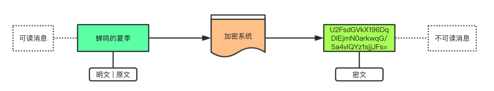
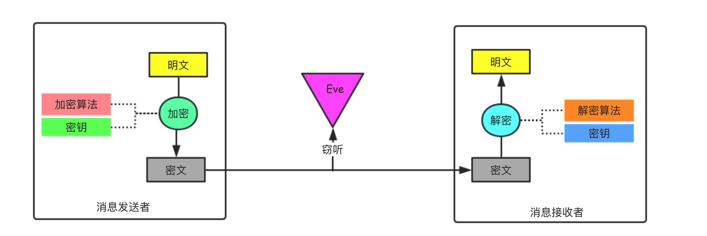
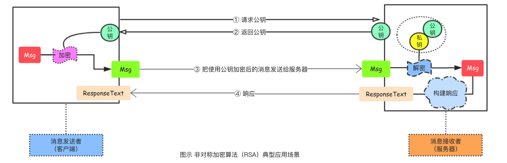
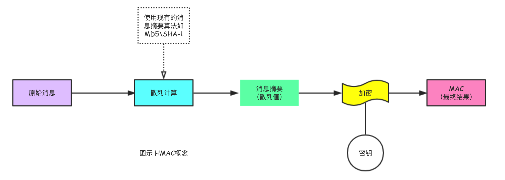

数据安全系列 术语
本文不详细介绍具体的加密算法，仅仅罗列数据安全领域常见的专业术语，并作出简要释义和说明。大概可以分成两大类，一类是参与的相关方(就是人),另一类则是冷冰冰的词汇了。
密码学（cryptography） 密码学是通过把消息编码使其不可读从而获取安全性的艺术与科学。
发送者（Sender） 在传递消息的过程中，发出信息的一方被称为发送者，可以是人也可以是机器。
** 接收者（receiver）**在传递消息的过程中，收到信息的一方被称为接收者，和发送者一样，接收者可以是具体的人或者是一台机器。
** 消息（message）**传递的信息通常被称为消息，消息可以是字符串、文本、图片、音频、视频等数据。
窃听者（eavesdropper） 发送者在把消息发送给接收者的时候，因为消息需要在在多个设备之间进行中转，所以在传达的过程中消息可能会被恶意的偷看，偷看消息内容的个体我们称为窃听者。
明文 | 原文（plaintext） 基于安全方面的考量，在开发中进行数据交互的时候通常我们会对一些敏感的用户隐私数据进行加密处理，需要进行加密的消息我们称为明文或者是原文。
密文（ciphertext） 采用特定方式对明文|原文加密之后得到的结果称为密文。
加密（encrypt） 加密是一种对明文的特定处理方式，对明文加密之后可以得到对应的密文，加密的方式和结果取决于特定的加密算法。
算法（algorithm） 用于解决（复杂）问题的特定步骤，通常称为算法。算法为我们提供了一条解决问题的特定路径，解决同一个问题可以有多种不同的算法。
加密算法（encrypt-Algorithm） 从明文生成密文的具体步骤，也就是加密的特定步骤我们称为加密算法。
解密（decrypt） 解密是一种对密文的特定处理方式，对密文解密之后可以得到对应的明文。所以，解密指的是根据密文得到原文的过程。
解密算法（decrypt-Algorithm） 从密文还原出明文|原文的具体步骤，也就是解密的特定步骤我们称为解密算法。
密码算法 加密算法 + 解密算法 = 密码算法
密码破译（cryptanalysis） 接收者把密文还原为明文的过程我们称为解密，如果是接收者外的其他人试图将密文还原为明文，则称为密码破译或者是密码分析。
破译者（cryptanalyst） 进行密码破译的人被称为破译者，破译者可以是单纯的坏人也可以是专业的研究人员，但并没有本质的差别。这就好像挖坟的可以是单纯的盗墓贼也可以是专业的考古人员，或者某些地区（江西）殡葬改革委员会的工作人员（特指抢棺材砸棺材的这些人）。
机密性（confidentiality） 机密性指的是信息安全中所面临的一种威胁，在消息传递过程中如果被窃听导致密码泄露则威胁到了信息的机密性。好比现在有一个消息，只有你知道，你把这个消息发送给我，如果最终的结果是你知道我知道世界上只有我们俩知道该消息，那么就认为该消息是很机密的，而如果最终除了我们俩之外的其他人也知道了该消息（哪怕是天和地也不行），那么我们就认为该消息不再机密。信息安全领域与消息相关了特性除了机密性之外还有完整性、认证以及不可否认性。
密钥（key） 密钥在很多加密算法中使用，它就好像我们现实生活中的钥匙一样，很多加密算法在加密和解密的时候都需要用到密钥，就好像很多锁在打开和锁起来的时候都需要用到钥匙一样。
替换技术 将明文消息转换为密文消息的技术主要有两种，其中一种是替换技术，另外一种是变换技术。替换技术的主要特点是在加密的过程中将一个个明文字符替换为一个个的密文字符，应用替换技术的主要加密算法有：凯撒加密算法、单码加密算法、同音替换加密算法、块替换加密算法、多码替换加密算法以及希尔加密算法等。
变换技术 变换技术是将明文消息转换为密文消息技术中的一种，它的特点是通过对明文字符进行某种特定的置换操作来得到密文字符，因此也称为置换技术。应用变换技术的主要加密算法有：栅栏加密算法、Vernam加密算法以及运动密钥加密算法等。
密码学家的工具箱 在众多的密码技术中有6种尤为重要，它们在布鲁斯·施奈尔的《网络信息安全的真相》中被提出，这6种加密技术分别是**对称密码、非对称密码、单向散列函数、消息认证码、数字签名和伪随机数生成器**。(注明：下图参考了结城浩先生的《图解密码技术》插图)
凯撒密码 凯撒密码指的是公元前100年左右诞生于古罗马的军事统帅朱利叶斯·凯撒使用的密码。凯撒密码的特点是通过将明文中所使用的字母表按照一定的字数平移来进行加密和解密。在这里如何加密（平移）其实就是加密算法，平移的位数其实就是密钥。凯撒密码本质上使用了替换技术来实现加密和解密操作。
暴力破解 在破译密码的时候，把所有的密钥都尝试一遍以试图推出原文的方式被称为暴力破解（brute-force search），因为这种破解的方式其实质是要从所有可能的密钥中找出正确的密钥所以也被称为穷举搜索。
密钥空间 一种密码技术能够使用的所有密钥的集合被称为密钥空间（key space）, 所有可以使用的密钥的总数就是密钥空间的大小，密钥空间越大，暴力破解的难度就越高。
编码 将显示世界中的数据信息映射为比特序列的操作被称为编码（encoding）, 计算机领域中常见的编码模式有ASCII、UTF8、Base64等。
算法类型 从广义上理解，明文生成密文的方法共两种，流加密法（stream ciphers）和分组加密法（block ciphers）, 其中分组加密法也称为块加密法。流加密技术一次加密明文中的一个位，解密时也是一位一位的进行。块加密即时一次加密明文中的一个分组（常见的是64位一组），解密时也是一个分组一个分组的进行。基于性能的考量，分组加密算法适用性更广具体实现也较多。
算法模式 在分组加密算法中有多种算法模式，不同的算法模式对应的分组加密方式也很不一样，常用的算法模式主要有电子密码本模式（ECB）、电子密码链条模式（CBC）、加密反馈模式（CFB）以及输出反馈模式（OFB）等等。
电子密码本模式（ECB） ECB模式的全称是Electronic CodeBook模式，ECB模式是所有算法模式中最简单的一种，它直接将分组的明文数据加密成为分组的密文，因为这种算法模式在处理的时候明文和密文存在一种一一对应的关系，因此主要样本足够大便能够轻易的进行破解，风险性较高。
加密反馈模式（CFB） CFB模式的全称是Cipher FeedBack模式,也称为密文反馈模式，它的特点是前一个密文分组会被送回到加密算法的输入端。需要注意的是针对CFB模式可以实施重放攻击。
输出反馈模式（OFB） OFB模式的全称是Output-FeedBack模式，在该模式中加密算法的输出会反馈到机密算法的输入中，它通过将明文分组和加密算法的输出进行异或运算来产生密文分组。
电子密码链条模式（CBC） CBC模式的全称是Cipher Block Chaining模式，也称为密文分组链接模式。在CBC模式中，首先会将明文分组与前一个密文分组进行异或运算，然后再进行加密。解密的过程刚好相反，因为第一块明文分组前并没有现成的密文分组可以与之进行异或运算，所以CBC模式在使用的时候需要一个初始化向量。
异或运算（XOR） 异或运算的全称是exclusiveor用于位运算。异或运算的特点相同为0，相异为1，常用⊕符号来表示。1 ⊕ 1 = 0；1 ⊕ 0 = 1；因为它的“还原”性质，异或运算在密码技术中被广泛应用。
伪装（spoofing） 伪装简单说冒名顶替，不是某人却假装是对方，在网络通信模型中主要体现在伪装成消息的发送者和接收者进行通信。
篡改（distort） 发送者把消息发送给接收者的中途消息可能会被恶意修改（篡改）。
伪随机数生成器（Pseudo Random Number Generator,PRNG） 伪随机数生成器是一种能够模拟产生随机数列的算法，密码技术中主要用于生成密钥。
对称加密算法 对称加密是一种应用时间较久且技术成熟的加密算法，因为对称加密算法加密和解密只有一个密钥所以也被称为秘密密钥加密算法（Secret Key Cryptography）或者是私钥加密算法（Private Key Cryptography）。对称加密算法的特点是安全性高、性能好、加密解密使用相同的密钥。经典的对称加密算法有：DES、双重DES、3DES、AES、RC4、RC5以及Blowfish等。对称加密算法存在的主要问题有：密钥传输安全问题以及每个通信模型都需要一个密钥。
数据加密标准（DES） DES是一种典型的对称加密算法，也被称为DEA（ANSI称之为数据加密算法）或者是DEA-1（ISO设置的称谓）。DES是一种使用了几十年的分组（块）加密算法，加密的时候会先对明文进行分组，分组的长度为64位（输入64位的明文输出64位的密文），DES加密和解密使用的密钥相同，密钥的有效长度为56位。
双重DES 双重DES是DES加密算法的变种，为了加强DES加密算法的强度，双重DES使用两个密钥，需要进行两次DES运算。
3DES 3DES是DES加密算法的变种，3DES执行3次DES运算，常见的3DES算法有两种版本，一种版本使用3个密钥（使用3个密钥进行3次DES加密运算），另外一种版本使用2个密钥（使用密钥1进行加密->使用密钥2进行解密->使用密钥1进行加密）。
国际数据加密算法（International Data Encryption Algorithm，IDEA） IDEA由研究员Xuejia Lai和James L. Massey研发，瑞士公司Ascom Systec拥有其专利权。IDEA被认为是最强大的数据加密算法之一，IDEA是典型的对称加密算法和DES算法类型，其使用的也是分组加密方式，分组长度为64位，密钥长度为128位。
RC4（Rivest Cipher 4） RC4于1987年由Ron Rivest开发，加密和解密使用相同的密钥，是典型的对称加密算法，但和DES不同的是RC采用的是流加密算法，其密钥长度可变。
RC5（Rivest Cipher 5） RC5是Ron Rivest开发出来的基于分组加密算法的对称加密算法，特点是速度快，灵活性更高。
高级数据加密标准（Advanced Encryption Standard，AES） 20世纪90年代，美国政府想把已经广泛使用的加密算法标准化以替代DES算法，被称为高级数据加密标准（AES），为此当时提出了很多的草案，经过多次争论后确定使用Rijndael算法。AES算法规定支持的密钥长度和明文分组长度为128位~256位（步长为32位）。常用的AES版本是128位明文分组加128位密钥的版本和128位明文分组加256位密钥的版本。
非对称加密算法（Asymmetric Key Cryptography） 非对称加密算法也称为公钥加密算法（Public Key Cryptography），和对称加密算法加密和解密使用相同的密钥不一样的是，非对称加密算法拥有两个密钥（一个密钥对），其中用于加密的密钥称为公钥，用于解密的密钥被称为私钥。非对称加密算法解决了对称加密算法中的密钥传输安全问题（密钥交换问题），经典的非对称加密算法主要有RSA和EIGamal算法。非对称加密算法相对来说性能速度没有对称加密那么好（速度慢、密文大），而且虽然解决了对称加密中的密钥交换问题但自己还存在公钥认证问题。
公钥（Public Key） 非对称加密算法中用于对消息进行加密处理的密钥，因为加密的密钥一般都是公开的，所以该密钥又被称为公钥。
私钥（Private Key） 非对称加密算法中用于对加密后的消息进行解密处理的密钥，因为该密钥是绝对不能公开的，所以该密钥又被称为私钥。
密钥对（key pair） 密钥对 = 公钥 + 私钥 在非对称加密算法中加密使用的公钥和解密使用的私钥应该是一一对应的，这样的一对匹配的密钥我们称之为密钥对。
公钥认证 所谓公钥认证问题就是发送者和接收者在进行通信的时候，发送方无法对公钥进行认证，即无法确证公钥是正确真实的而非伪造的。因为在使用非对称加密算法的时候我们无法对公钥进行认证，所以可能会遭遇中间人攻击。
中间人攻击（Man-in-the-MiddleAttack） 在特定的场景中(比如网络通信)，使用非对称加密的方式来进行安全的通信可能会遭遇到中间人攻击。假设在客户端和服务器端刚建立通信的时候，客户端先发请求给服务器端索要加密中需要用到的公钥，而这个过程如果被窃听，那么当服务器把公钥返回给客户端的时候，窃听者把返回的公钥截留，然后再自己伪造一个密钥对并把伪造的公钥返回给客户端。客户端拿到公钥之后因为无法对公钥进行认证所以并不知道收到的公钥已在中途被替换，客户端使用窃听者伪造的公钥对消息进行加密之后发给服务器，中途窃听者接收到加密的消息后使用配对的私钥来对加密的消息进行解密，篡改消息的内容后再使用之前截留的公钥来对消息加密并转发给服务器端。整个过程中，客户端和服务器端都没察觉通信已经被监听、消息已经被篡改，它们彼此还天真的以为自己在使用着非对称加密算法进行着世界上最隐蔽的交流。上面描述的这个过程就是一个典型的中间人攻击的场景，利用的正是客户端无法对公钥进行认证以及HTTP明文传输，要解决这个问题可以考虑对公钥进行数字签名，在Web通信中对公钥进行数字签名其实就是证书。
RSA算法 RSA是最著名和可靠的非对称加密算法，它的名字由它的三位开发者，即Ron Rivest、Adi Shamir和Leonard Adleman的姓氏的首字母组成，也就是（Rivest - Shamir - Adleman）, RSA算法实现基于数学中的素数，它基于的数学事实是：两个大的素数相乘很容易而对于得到的积求因子则很困难。
数字签名（digital signature） 数字签名是一种在信息安全领域能够解决伪装、篡改和否认等问题的技术，类似于现实世界中的签名盖章。数字签名技术的使用基于这样的事实：使用一个公钥加密的消息只能使用相应的私钥来进行解密，反过来，使用私钥加密的消息只能用相应的公钥进行解密。想象下面的场景，在双方通信的时候，我们如何能够确认收到的消息是对方发送而不是由中间人伪造的呢？在现实中我们采用的方式可能是盖章、签名或者指纹，因为不管是签名还是指纹都只有特定的人拥有，是私有性质的。我们知道在非对称加密中公钥是可以公开的，私钥私有不能公开，所以具体的实现数字签名的时候，发送方使用自己的私钥来来对消息进行加密就可以得到一个数字签名，接收者收到消息（数字签名）之后如果能够用公钥对消息进行加密那么我们就能够实现基本的认证。数字签名技术在现代Web商务中至关重要，多数国家已经把数字签名看成是与手工签名具有同等法律效力的授权机制。
生成数字签名 使用自己的私钥来对特定消息进行加密得到签名字符串的过程，我们称为生成数字签名，该步骤由发送者处理。
验证数字签名 接收到签名消息后使用发送者的公钥（签名密钥只能由签名的人持有，而验证公钥则是任何需要验证签名的人都可以持有）来对签名进行解密匹配的过程，我们称为验证数字签名，该步骤由接收者处理。验证数字签名的结果可以是成功或者是失败，如果成功则表示该信息确实是由特定的发送者发出的。
数字签名机制 数字签名的机制似乎刚好是把非对称加密的过程反过来，在数字签名技术中，我们使用私钥来对消息加密生成签名，然后使用公钥来对签名进行验证。常用的生成和验证数字签名的方法有两种① 直接对消息进行签名以及② 对消息的散列值进行签名。
散列值（Hash Value） 使用单向散列函数来对消息进行散列计算得到的结果被称为散列值，散列值也被称为消息摘要（Message digest）或者指纹（Fingerprint）。
单向散列函数（One-way Hash Function） 单向散列函数也被称为消息摘要函数（Message Digest Function）、哈希函数或者是杂凑函数。单向散列函数根据消息的内容来计算出散列值，在数据加密（如注册-登录）、文件完整性验证、版权处理、云盘秒传等方面有具体的应用。经典的单向散列函数算法有：MD4、MD5、SHA家族以及HMAC等，下面简单罗列单向散列函数的性质特征：
❑ 对任意长度的消息计算得到的散列值是定长的。
❑ 计算散列值的速度快、效率高
❑ 消息相同，散列值一定相同，消息不同，散列值一定不同。
❑ 散列计算的过程是单向的，不可逆
碰撞（Collision） 虽然单向散列函数的性质中有如果消息不同那么散列值一定不同，但这并不是绝对的，两个不同的消息产生同一个散列值的情况称为碰撞，如果要将单向散列函数用于文件完整性检验，那么需要确保事实上不可能被认为的发现碰撞。
抗碰撞性（Collision Resistance） 难以发现碰撞的性质被称为抗碰撞性，密码技术中所使用的单向散列函数都要求具备抗碰撞性。
弱抗碰撞性 单向散列函数必须确保要找到和该条消息具有相同散列值的另外一条消息是非常困难的，这一性质被称为弱抗碰撞性。
MD4 消息摘要算法第4版本，（Message Digest 4）1990年由Rivest设计，已经被破解并不安全。
MD5 消息摘要算法第5版本，（Message Digest 5） Rivest于1991年设计的单向散列函数，能够产生128位的散列值，该算法的强抗碰撞性已经被攻破也不安全。
SHA家族算法 SHA家族拥有一系列的具体算法，包括：SHA-1、SHA-256、SHA-384、SHA-512等，这些算法均是由美国国家标准与技术研究院（National Institute of Standards and Technology，NIST）设计的单向散列函数。目前SHA-1的强抗碰撞性已经被攻破（2005年由山东大学王小云教授带领的团队提出了针对SHA-1的碰撞攻击算法）。
消息认证码（Message Authentication Code，MAC） 消息认证码和消息摘要类似，区别在于消息摘要是消息的指纹，其散列计算并不涉及到具体的加密过程，而MAC则要求通信双方知道共享对称密钥用来准备MAC，其涉及到具体的加密过程。
HAMC 是基于散列的消息认证码（Hash-based Message Authentication Code ,HMAC）其在IP协议中作为强制的安全实施方法，在SSL安全协议中也广泛使用，其核心思想是复用MD5和SHA-1这样的消息摘要算法，说白了HAMC是包含了加密的消息摘要算法，其本身存在实用性的问题。
公钥证书（Public-Key Certificate，PKC） 公钥证书简称为证书，内部包含了姓名、组织、邮箱等个人信息以及属于此人的公钥，并由**第三方的认证机构(Certification Authority、Certifying Authority，CA)**进行数字签名，只要看到公钥证书我们就能够确定该公钥的确属于此人。其实，简单的来理解的话，证书就是对公钥进行数字签名，它解决了非对称加密系统中存在的无法认证公钥问题。
认证机构（Certification Authority，CA）是对证书进行管理的人。
公钥基础设施（Public-Key Infrastructure） 是为了能够更有效地运用公钥而制定的一系列规范的总称，一般简称为PKI。需要注意的是PKI只是一个总称，而非某一个特定的规范或标准。
混合加密系统 基于对称加密和非对称加密等算法的优缺点，在现实中使用的通常都是混合的加密系统。
**混合加密系统 = 对称加密 + 非对称加密 + 单向散列函数 + 消息认证码 + 证书 + ··· **